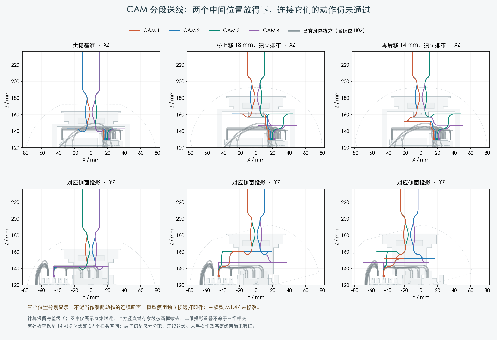

两个中间位置已有独立排布通过几何检查；从坐稳位置到这些位置的完整送线动作仍未通过。主模型 M1.47 未改，制造图未放行。
| 桥的位置 | 四线最小保守间隙 | 结果范围 |
|---|---|---|
| 上移 18 mm | 0.439 mm | 单个位置的零件、邻线、自绕和端子空间 |
| 上移 18 mm、后移 14 mm | 0.765 mm | 同上，身体端 PH 接口保持不动 |
完整线长保留，身体端直段保留，解析圆弯最小半径 7 mm。端子仍是明确标注的尺寸分配。

保持原弯线形式，每 0.5 mm 逐步抬升。第 1–3 根各自有候选，第 4 根尚未与它们形成完整组合。改变收弯时机的六组尝试，在细化到 0.015 mm 线段后，仍有 H02 间隙不足或明确相交。
又检查了临时降低中段 0.5–4 mm 的 7 组动作，仍未形成四根线同时通过的抬升组合。
这需要继续完成线束设计；没有据此扩大孔、移动 PCB 或增加零件。
14 根身体线、当前阶段 122 件原模型零件、29 个插头空间分配保留。使用前序研究的未采用打印候选。其余跨关节线、FPC、扎带、人手、真实端子入壳和最终裁线尺寸仍待完成。